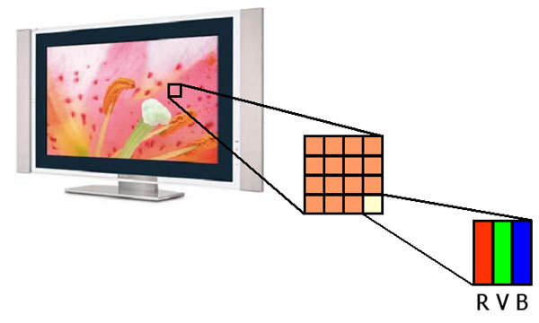
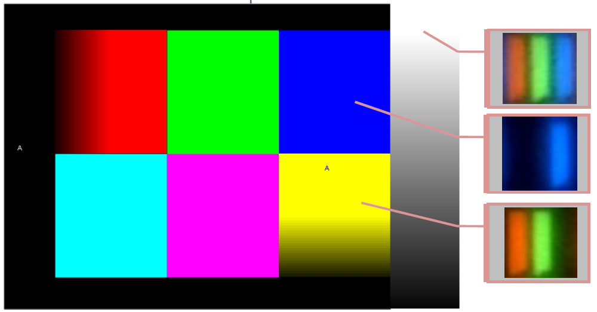
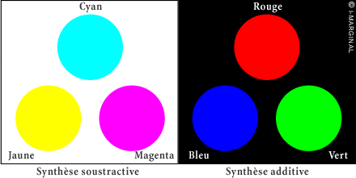
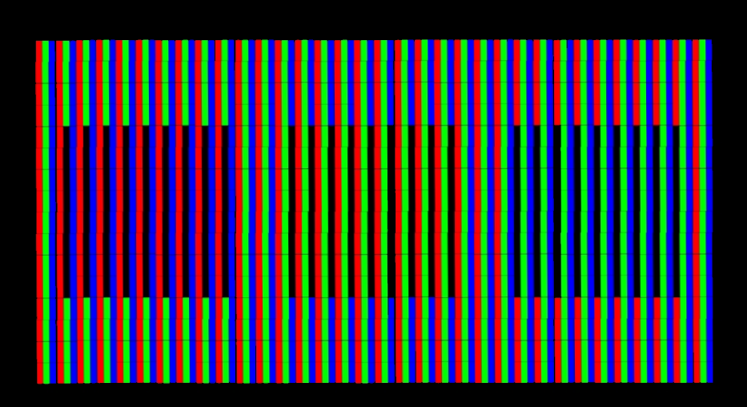

Un pixel, des pixels, toujours des pixels...

|
|
En observant à la loupe la surface d'un écran plat on s’aperçoit que celui-ci est composé de plusieurs milliers de pixels. Chaque pixel est lui même composé de trois sous-pixels Rouge, Vert et Bleu. La couleur d'un pixel est interprétée par notre cerveau qui fait la synthèse additive des trois couleurs primaires Rouge, Vert et Bleu. |
 |
 |
|||
La synthèse soustractive est utisée en impression sur un fond blanc. Ex: Imprimante à jet d'encre, imprimerie,... |
La synthèse additive est utilisée lorsque l'on projète des rayons lumineux par exemple sur un fond noir. C'est le cas des téléviseurs. |
||
Illustration du principe de fonctionnement de la restitution des couleurs par un écran plat.
image constituée à l'aide de "pixels géants".
Éloignez-vous de l'écran pour voir fonctionner la synthèse additive.
